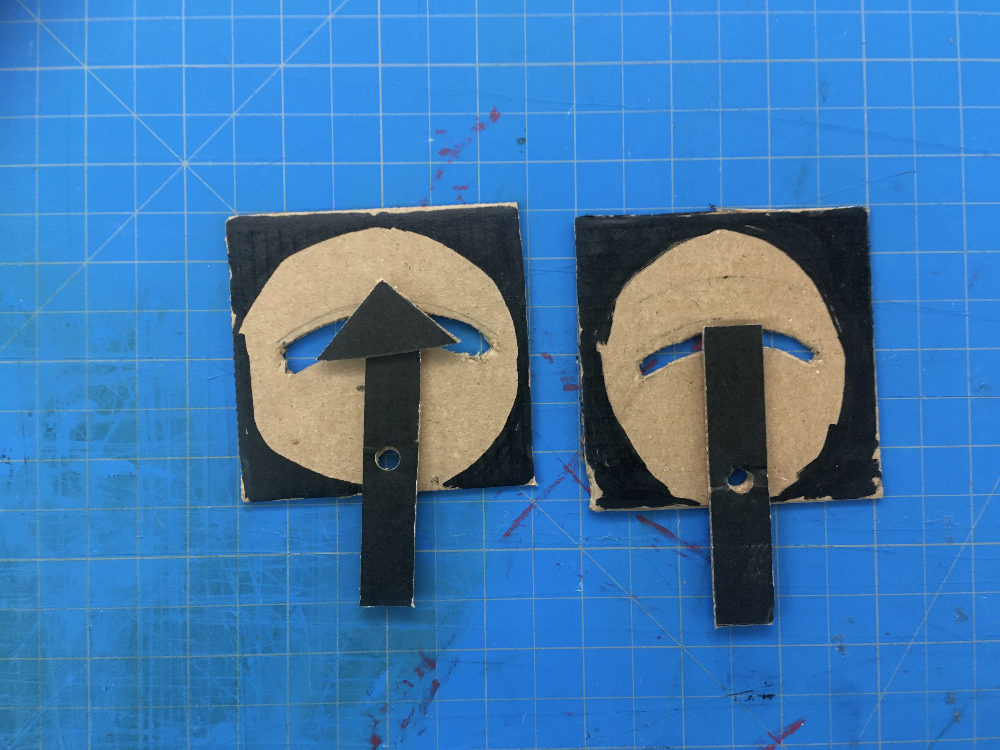
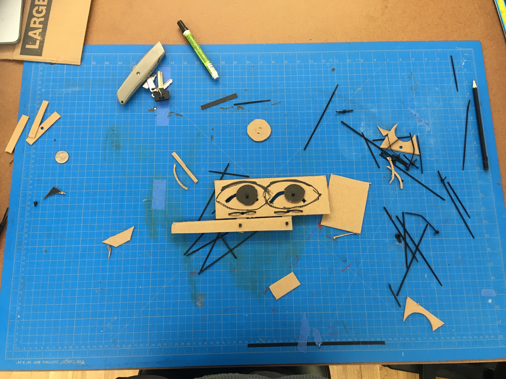

Simple Mechanical Prototype

I created this simple mechanism to control the movement of eyes through a process of sketching and physical experimentation. I am trying to push through my difficulties with drawing and handwork, by the only means possible, drawing and hard work. I am interested in playing with paper as it has two sides and thought about creating some puppetry to control a fish in a bowl. A fish is almost a 2D creature as it is, so I figured it would look good going flat as it turned to face the viewer. I could have both sides be different colors.

I started to sketch out the mechanism and began to learn a few things. In the past, I have been a CAD first creator. This has been limiting for me because it requires a large degree of calculation and design to make simple forms. As I get better at drawing, I am able to explore more forms quickly. Speed is so important. I also like how drawing allows the brain to hold a more generative role in the creative process allowing paper and pen to operate as extended physical memory. "working things out" on the page.
I did not want to have only a pivot point as the mechanism, so I thought about how to translate some rotational force of a crank into the linear side to side that drives the fish. I also began to think about putting the rod behind the fish so that it appears self moving from the angle of viewing. Other considerations I ran into while sketching are the length of the lever arm and pivot point being proportional to their distances. It struck me that I did not want to have a huge control lever resulting in a tiny amount of motion. It also struck me how the end of the lever would result in an arc and I would thusly need some other type of joinery to translate from that radial motion into a linear one. Given time constraints, I began thinking about a way to utilize the radial motion of the far end of the lever as the final output of my system. Eyeballs came to me as an object which has a variety of motions, some of it could be radial given the spherical shape of the eye. I wanted it to give off some emotion as well, but short of "rolling one's eyes," I figured whatever came out would be just fine. Let's find the emotion in the piece after the fact.
The next thing I did was move to Illustrator because I thought I would be able to use the laser cutter. Turns out to be against the rules, but that's okay. It helped me clean up my thoughts a little more and easily duplicate the forms I made to explore creating a linked set of two eyes. Looking back on this now, I see that the radii I was exploring for the movement of the lever arm are incorrect as they should be centered around the point of pivot. At this time, I was still thinking about the lever arm as some kind of round rod which could fit easily through a slip linkage translating that radial force to the horizontal one I wanted for a clean side to side eye movement.

Finally I got my knife and pencil and hole punch and zip ties out and got to cutting. I was excited to use the zip tie joining method as inspired by this guide by Adafruit on cardboard crafting.
https://learn.adafruit.com/cardboard-fundamentals?view=all
This was a section I should have documented better. I need to sit down to work with a camera in hand. Oh well. Here are the first two eye shapes I cut. I traced and centered the lever rods on the hole puncher and punched them, then did the same on my cardboard squares. The resulting holes were too big for zip ties to fit on as joinery, so I had to get creative. The problem was solved by securing both sides which would have lateral force on them using the long flat section of the zip tie and looping it through the cardboard nearby. I suppose this technique could be used on the top and bottom sides, but that would only be required if it was rotating 360 degrees. For this motion, it is acceptable to constrain only the sides. To get the trace out of the path of the zip tie joinery region, I used my lever arm as a compass and traced out the motion as it was constrained by the zip ties. Then I drew on the page something of an offset arc, and then I offset that new arc again an equal distance to the bottom making a curved slot on the page. You can see on the left my technique was a bit sloppy and by number two I had gotten a little cleaner. I constructed the mechanism twice before moving onto my final build. I was careful to reuse some of the pieces I cut.
Finally, with the single sheet remade, I mounted my lever arms, eye circles, rotational zip ties, and control arm zip tie pivots and a freshly cut linking power input! My eyeball puppet was ready to perform.
